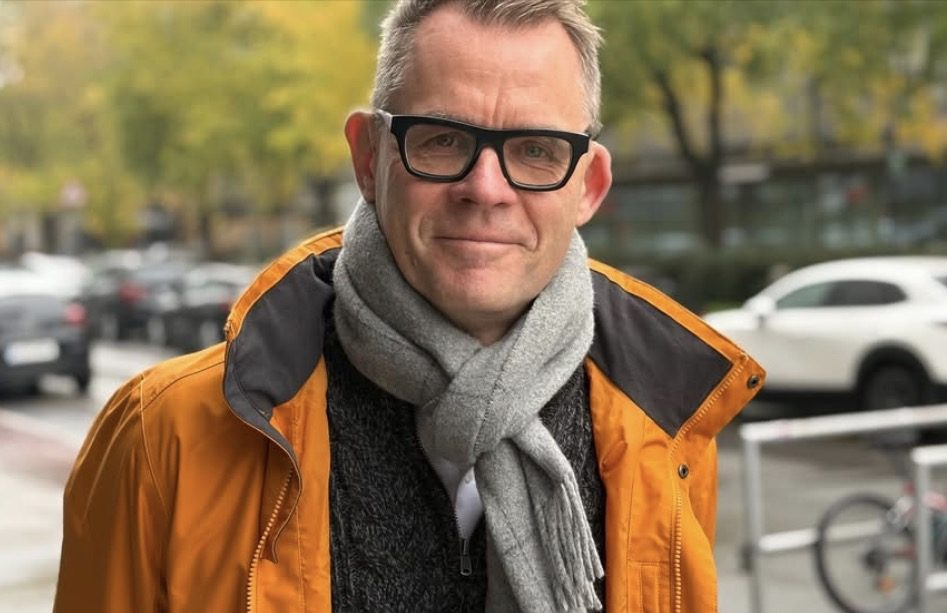

The generation that is protesting has lived its whole life in one crisis after another
Vroči mikrofon (“Hot Mic”), Val 202, RTV Slovenija
Slovenian transcript·Listen on Val 202 (in Slovenian)
The interview was conducted in Slovenian. This is a lightly edited transcript, translated with the help of AI. Repetitions and fillers have been removed; […] marks a passage missing from the transcript and [?] a word that was unclear in the recording.

Gašper Andrinek: Matjaž Gruden, good afternoon.
Matjaž Gruden: Good afternoon.
Gašper Andrinek: Matjaž Gruden is an expert in international relations and a columnist who writes for Večer. He has spent most of his career abroad, although he follows the situation in Slovenia very closely. After 31 years, he is leaving the Council of Europe.
Matjaž Gruden: I still think I was immensely lucky to have had the opportunity to work for so long in a field I consider extremely important.
Gašper Andrinek: In time he will return to Slovenia, but above all he wants to remain active in his field. One of the areas to which he has devoted himself in recent years is democracy.
I'm Gašper Andrinek, and this is Vroči mikrofon (Hot Mic). In this episode, Matjaž Gruden and I talk about the state democracy is in in Europe, and why the young people who have taken to the streets of European cities no longer believe in the future. Alongside this conversation, I also recommend our overview of the protests across Europe, which you can find in the Vroči mikrofon podcast as well.
Now, the first question, which is very broad and one that each of us asks from time to time. I know it's very general, but how would you describe the society, the world we are living in right now?
Matjaž Gruden: Yes, that's a very broad question. It is certainly not in its best shape. This is certainly not a moment in the last 70 or 80 years that we could be proud of; on the contrary, I think it should worry us. Not only because there are more and more conflicts and wars in the world, and not only because tensions are rising between and within countries. What is most worrying is the absence of security. We are essentially living at a time when people are afraid of the future. Objectively speaking, that fear is in many respects justified, and at the same time we are not very good at finding effective answers to the many challenges that cause it. And that is very dangerous.
Gašper Andrinek: You said it's not in its best shape. Since we're talking about shape: professionally, you worked on democracy, in fact on nurturing democracy, which is never as self-evident as some might think. So what shape, what condition is democracy in? Perhaps we can focus on Europe, since you worked within the Council of Europe.
Matjaž Gruden: Yes, and I intend to keep working on strengthening democracy, just in a different way. That was also one of my motives for deciding to leave the organisation.
Briefly, on the shape of democracy: of course you expect the answer that it's not at its best, that it's in poor shape, but I would stress something else. It's not that democracy is a weak system, or a weak social or civilisational model. But it is an extremely delicate and vulnerable model, and not only today; it always has been. Yet we behave, or for many years we behaved, as if it were a system that is here and will stay here, endure and survive no matter what we do with it. That, in my view, is what caused this crisis of democracy, this social crisis: the naive and irresponsible belief that we had reached Fukuyama's famous, worn-out end of history, that democracy was now here to stay and that we could treat it however carelessly we liked, and it would always bounce back on its own. Sadly, that is not true.
Gašper Andrinek: How do you see the protests in European cities? They are very heterogeneous, but what they have in common is that it's the young generation out on the streets. In one interview you said young people are angry. Why are young people angry?
Matjaž Gruden: That's a rhetorical question. I don't think they are as heterogeneous as they seem. In my view, all these protests we are seeing in France, Germany, Albania, Portugal and elsewhere have very similar, if not identical, causes, which I would connect to what I said earlier: the absence of confidence in the future.
We are talking about a generation born in this millennium that has essentially known nothing but crisis. At a very young age it lived through and felt the consequences of the financial crisis, then there was the migration crisis, then Covid, then climate change and technological challenges that don't bring only positive things but add further uncertainty and fear, including about jobs. This is a generation that, unlike its parents' generation, cannot in any way expect that its legitimate expectations regarding basic social needs, such as education, employment, housing and healthcare, will be met or respected to any effective degree.
At the same time, it is the generation that will have to make sure that our generation, in an ageing Europe, can live well. That's the intergenerational system: we expect these young people to work and make sure we can enjoy a good old age, while they themselves have no prospects as to what their own old age will look like. Hence the dissatisfaction, anger and worry, not to mention climate change, which, for obvious reasons, they will suffer more directly and for longer than we will.
These are the common causes, which are then of course expressed in different shades depending on local circumstances. In France, the school students' revolt was triggered by justified dissatisfaction with the state of schools and investment in the education system; in Spain the emphasis was on housing. But if we look around Europe, we see that they always touch on the most legitimate, most basic and, lately, the most disregarded expectations of young people in today's world.
Gašper Andrinek: I find what you said about the causes of the protests in France interesting: a school students' revolt that then turned into student protests. On the other hand, we live in a time when knowledge has somehow become undervalued. In the age of artificial intelligence, when it seems that all knowledge is right here, two clicks away, young people are choosing to protest for better conditions in schools, for more investment in public education, more staff, better teachers. How do you see this in France? You have experienced the French school system yourself.
Matjaž Gruden: I wouldn't call it conservative, rather the opposite. In an ideologically neutral sense, I would see it as a very progressive act by young people, which proves once again that we often underestimate them, ignore them, and don't know how to listen to them or take them into account. And that often harms not only young people but ourselves too, because if we knew how to listen to them, take them into account and involve them in solving key problems, we might reach effective solutions more easily and more quickly.
That is one of the most basic and most important conclusions I have drawn from my recent years of work on strengthening democracy and working with young people. At a time when we face so many challenges and threats that we don't even really understand or can't keep up with, involving young people in the search for solutions is essential. And not superficially, but genuinely involving them in decision-making. Without their experience, perspective, creativity, innovation and disruptiveness, we, my generation, are not capable of finding and implementing those solutions. If we don't listen to them and ignore them, young people express their protest, their dissatisfaction, the way we are now seeing in Europe.
I think the way France reacted at the very beginning was extremely unwise: we saw scenes of violence that were horrifying. We also saw, as often happens, the protests being exploited opportunistically by other groups, by political parties, and by certain groups that almost professionally engage in smashing and looting at every protest of this kind. Some then used this to stigmatise the school students themselves. But in the end, I think we will reach a point where we can thank these young people for warning us, not only in France but elsewhere too, how far things have gone. I hope we will manage to draw some constructive conclusions from it.
Gašper Andrinek: Can protest actually change anything in a system like France's, which historically is used to large protests, popular assemblies, demonstrations and uprisings of all kinds? Can it change the status quo?
Matjaž Gruden: […] From protests that transformed society to later ones that many times forced French presidents to change their policies and their flagship projects in particular areas, from tax policy to pensions. The French, and their anger, should never be underestimated, not to mention what they did two hundred and some years ago.
Gašper Andrinek: Let's stay with France for a moment. Christine Lagarde is said to be leaving the head of the European Central Bank early partly in order to help France, or rather to help prevent a victory of the far right in the elections. How do you see these political developments? What could happen, based on your experience of living there?
Matjaž Gruden: Again, it's hard to predict. At this moment it seems that the only candidacies with good chances of reaching the second round are on the far right and the far left. When I use the word "far", I don't mean that the distance from the centre is the same in both cases; I mean those at the most exposed edge of each political pole: on one side, of course, Marine Le Pen, and on the other, Jean-Luc Mélenchon. What is going on between them, I think, is not clear either to the French or to the politicians in the centre, centre-left and centre-right who are trying to find their place in the sun. One big muddle, a lot of cautious positioning and, I would say, very little evident understanding of how far things have gone and what could happen if the far right actually wins in a country like France.
But it is true that it's still early. Just as in American elections they talk about the October surprise, in recent French elections, over quite a few cycles, there have often been January surprises. So, who knows, let's be surprised.
Gašper Andrinek: I'd mention one more protest, which seems somewhat different but has this in common: it comes from the ranks of students. Serbia. There, it actually seemed impossible to win elections in this way, or to defeat Aleksandar Vučić's regime through legitimate elections, because we had seen in the past how permeated society was by his presence. How do you see this change in Serbia, and what does it mean for Serbia's European perspective?
Matjaž Gruden: I think this is an extremely important and actually almost unexpected development, which surprised many, sometimes, it seems to me, even the students themselves. Until the very last moment, Aleksandar Vučić seemed somehow untouchable, or at least it was expected that, in line with what we knew about him, he would cling to power by every possible means. That didn't happen; there was a change of government.
This is very important because it shows that even the system of politicians like Vučić has its limits. They belong to a category I would translate into Slovenian as competitive authoritarians: authoritarian leaders who still keep up an appearance of democracy, holding elections and allowing independent media to exist, albeit under pressure, while using every other means to ensure that society is controlled by the authoritarian leader. As we saw in Hungary and are now seeing in Serbia, that competitiveness is real and can lead to the loss of power. That is very positive, very good. What may worry us a little is that other competitive authoritarians will learn this lesson, and that from now on there will be considerably less competitiveness in other authoritarian regimes, that authoritarianism will grow at the expense of competitiveness.
As for Serbia's European perspective: for some time, some people have been noting with great concern that European symbols, the European flag, were missing at the protests and still are, and that the students even reacted negatively to them. I think there is also something very positive in this. Regardless of whether or not they waved the blue flag with the golden stars, their demands, with which they convinced Serbian voters and won the elections, are essentially identical to what the European Union expects of its future members: independent media, the rule of law, integrity, respect for human rights.
Serbian students are wary of European symbols for various reasons, but I think mainly because of disappointment with how Europe behaved towards Serbia for many years. Not only did it dangle the carrot and promise things that never happened, but above all, for many years it gave priority to the stability it saw in Vučić over genuine support for the values the students were fighting for. So I find it logical that the students did not exactly wrap themselves in blue flags, either during the protests or now.
What matters, though, is that they are putting these demands into practice, demands which, as I said, are identical to those required for joining the European Union, not to please Brussels, but because they want to build a different future, a different country and a different society based on those values. That is an extremely good message for the European Union too, because it frames the paradigm of enlargement in a somewhat different way: not as adapting to and pleasing external demands, but as social, democratic change based on the recognition that you do these things first and foremost for yourself.
Gašper Andrinek: Besides the protests, elections are coming up in several rather important countries; we've already mentioned one. Mark Leonard, director of the think tank European Council on Foreign Relations, writes in a piece published in Delo through Project Syndicate that it may be too early to predict the outcomes in Spain, France, Poland and Italy, as you said, but there is no doubt that far-right and populist ideas will shape the Europe that emerges from these elections. He also writes that because of the failure of Brexit, most European far-right parties have dropped the rhetoric of leaving the European Union and shifted towards proposals to reshape it. In this context, after elections that are also said to be crucial for the Union's future, how do you see the vision of the European Union?
Matjaž Gruden: Above all, I wouldn't be as categorical as Mr Leonard. Alarming predictions like that attract attention. I'm not saying he's wrong, or that it won't happen, but I do think that in most of the cases you mentioned it is still too early for such definitive and confident analyses of future outcomes. The fact is, as I said earlier, that the model of liberal democracy on which Europe built its stability and economic development in the decades from the Second World War to today is in deep crisis. It is exposed to many challenges, pressures and threats, and to those who offer different, alternative models.
Gašper Andrinek: Perhaps we should mention Alternative for Germany and its rise in Germany here.
Matjaž Gruden: Yes, in this collection of potential future rulers, they are certainly the most worrying, not only because of the extremity of their positions but also because of clear signs that this is a movement and set of ideas directed from outside. That must on no account be underestimated. These influences are of course present in other countries too, and I am convinced also here in Slovenia.
I would add one more thing. We very often use very broad and superficial labels, because that is sometimes easier, and "far right" is also becoming a very broad term. In this part of the European political space we see ideas, ideologies and politics, such as the AfD, which I've already mentioned, and some others, that are not only instrumentalised and steered from outside but represent ideas that are in complete opposition to the civilisational idea of Europe and the values on which it rests. Then there is a whole range of policies, ideas and political parties with which I personally, and many others, disagree on many issues, perhaps on some entirely, but whose legitimacy we must accept, agreeing that in a democratic space we can and must discuss these questions. After all, the goal of democracy is not, and cannot be, a society in which everyone thinks the way I do.
Gašper Andrinek: Another topic, which divides not so much society, since society seems to condemn it very clearly, but rather states and regimes: the attitude towards Israel, Gaza and the Palestinians. How do you see this topic in Europe, where it is present every day and is becoming a domestic political issue in many countries, including at protests? What impact does it have, and how should we approach it?
Matjaž Gruden: I think it is logical, normal and expected that what we have been witnessing in the Middle East, in Gaza, over recent months, years, one could even say decades, and especially of course since the events that followed 7 October, is very present and has made a great impression on people elsewhere, including in Slovenia. That is logical and humanly to be expected when we are confronted with such an accumulation of inhumanity, with genocide, and with the normalisation, legitimisation, downplaying or even ignoring of that genocide by politicians at many levels. That rightly provokes a reaction, to put it mildly.
That is the first level. I think that European politics in the broadest sense, at the European and the national levels, the politics that stands up for democratic, civilisational and humanist principles and values, did itself a great disservice and undermined its own position through its at least initial attitude to what was happening in Gaza: through its absence, its inability or unwillingness to condemn it and to do everything to stop what was happening and is still happening. Those consequences will last: distrust among many people who would otherwise be on the same side politically and ideologically, but who now have a serious problem with how their political leaders acted, or failed to act, at that moment.
The second level is that the Israeli government, under the leadership of what is evidently an outgoing prime minister, is politically very active abroad and has created around itself a kind of system of satellites that help it defend its international position, that uncritically come to its defence and support it. Among them, sadly, is Slovenia, or rather part of Slovenian politics, and that is a stain and a responsibility that will remain with that part of our politics for a very long time.
And finally, it is also true that this justified criticism and condemnation is very often met with accusations of antisemitism, which is perverse. On the other hand, within this justified response there are, in certain cases, reactions that I find problematic: those that fail to distinguish between Israeli policy, Netanyahu's policy, and Judaism and Jews, who may hold different views on this and live everywhere. And those who respond to the fact that a genocide has taken place there, and that this Israeli government's policy is evidently that there should be no more Palestinians there, by demanding that there should be no more Israel, as if one genocide could be solved with another. I do want to draw attention to this, because antisemitism is on the rise. Not the kind that the far right and Netanyahu's supporters accuse critics of Israeli policy of, but the kind that genuinely exists. People living in Europe, in France, in Strasbourg, feel it every day.
Gašper Andrinek: At the beginning of our conversation you mentioned that people no longer feel secure or confident in the future. I'd like to know what poses the greater threat to peace in Europe: hybrid warfare, the bomb threats at airports we've been seeing in recent weeks, the attacks on refrigeration units [?] in France and elsewhere, hacker attacks; or, on the other hand, the protests, the rise of extremes we talked about, the gap between rich and poor?
Matjaž Gruden: I don't think this is an either-or situation. It would be a big mistake to choose between one danger and the other, because both are present and both threaten our security. To understand today's situation, I think the concept of democratic security, which the Council of Europe put forward after the fall of the Berlin Wall, is very important.
When we talk about defence against what are no longer risks but military activities that are already happening, we are talking about military operations in the form of hybrid warfare: from the refrigeration units [?] you mentioned, which the French interior minister yesterday attributed to Iran, to threats against airlines and all the other cases we have witnessed. This means the military threat is here, it is real, and Europe must protect itself against it. We could call this security for democracy: we must invest in it, because our democracy, however much of it is left and in whatever state it is in, is threatened from outside, by foreign actors. We are talking about Iran, about Russia, also about Israel, which is very present, about China, perhaps even about America. All of them try to exert influence in different ways, not all through hybrid warfare, but certainly through disinformation. We must protect ourselves against that and invest in it. And not only that: the readiness of these foreign powers to intervene in and threaten Europe through hybrid warfare suggests that, if the conditions were right, they would be prepared to go a step further. That is what should really worry us. So this component of security is important to me.
On the other hand, we have the concept of democratic security, which should be understood as security through democracy. That means creating the conditions in which a democratic society is internally strong and resilient against attempts at destabilisation from outside or from within. In the long term, this is the most important aspect of security, and it requires investment in, support for and maintenance of all the systems that make democracy work. Starting with independent, professional media, with an economically sustainable model for professional, high-quality, independent journalism, which is now under pressure almost everywhere, including here. When that falls, when it is no longer there, there is no more democracy, and the work of those trying to destabilise us from outside becomes much easier.
Then there is the inclusion of young people and the attention we must give them, as I said, and a much more serious approach to social issues, which are the biggest driver of the frustration and dissatisfaction that create polarisation and, again, help destabilise our societies from outside. Here we should be moving much faster, much more concretely and in a completely different direction from the one Slovenia seems to be taking today, including with the announced law we will be deciding on in December, which could further endanger these neuralgic, security-sensitive issues, such as people's social security, and expose us in security terms. Not only will it have serious consequences for Slovenia's further development, it can also create security risks.
So we must not focus only on security for democracy, nor only on security through democracy; we need both. What worries me is that many political decision-makers in Europe now seem to think only the first part matters, security for democracy. I say, rightly so, because that risk exists. But if we strengthen security for democracy at the expense of investment in and support for education, housing policy, employment, healthcare, everything that is under attack and under pressure, we may be phenomenally effective at security, we will shoot down every drone that comes from outside and stop every piece of disinformation that comes out of St Petersburg. The problem is that we will have very little democracy left to defend.
Gašper Andrinek: And this is something that, if I understand correctly, as you said on Metin čaj [?], could in principle be classified as dual use and included in the security budget required by the NATO alliance. So strengthening public media could also count as dual use?
Matjaž Gruden: Yes, absolutely. I think we should work towards an understanding and a consensus that, for long-term security and stability, Europe needs both. I think that under the previous government we approached these dual-use debates in a rather half-hearted, unserious way: we'll tell NATO this counts as that, and that counts as something else. That's not how it works. We need to put this question on the table in Europe, in NATO, in the European Union and with our other allies, on the basis of clear arguments and with confidence. Our long-term, and also medium-term, security does not depend only on whether we can stop Russian drones or Russian tanks at Europe's borders. It depends on that too, but not only on that; it also depends on how strong, resilient and immune our society is to pressures and security risks coming from within.
And those depend on functioning democratic institutions, as I said, the media, the judiciary, civil society and so on, all of which are under pressure, and on the other hand on effectively meeting the legitimate expectations of European citizens regarding their future, jobs, health, schooling and all those things on the basis of which they decide whether to support European democracy or whether they are willing to accept alternatives, many of which come from outside or are manipulated from outside.
Gašper Andrinek: We have already touched on the Russian threat to Europe. Russia has been at war with Ukraine for more than four years, and we are in a period of new negotiations. You have dealt with this a great deal and warned about the Russian threat. How do you see Russia's vision? What do they really want in Europe, what are their aims?
Matjaž Gruden: Here we are talking about the vision of President Putin and the clique around him, which has the country under complete control. I think these aims, vision is a big word, are directly linked to President Putin's existential interest in staying in power. He came to power through violence against Russian citizens: he organised the bombing of apartment blocks and started the second war in Chechnya, which then brought him to power when Yeltsin appointed him at the end of 1999. Since then he has kept himself in power through the most brutal authoritarianism and violence. That is a formula that requires constant escalation of violence, at home and abroad. So I wouldn't speak of a vision; I would say that, from his perspective, he has no other way out.
There is a great deal of speculation about why he decided in 2014 first to occupy Crimea and then to attack the rest of Ukraine, whether it was because of this or that. Fundamentally, it was because Ukraine, weak and with serious problems that it still has today, decided almost by plebiscite for a future based on values diametrically opposed to those on which Putin rules Russia. Putin simply could not afford the risk that on Russia's borders a Ukraine, which Russians very often look down on and underestimate, would have a prospect of social, economic and democratic success. That would show his subjects in Russia that there might be alternatives to an archaic, backward-looking authoritarianism based on national myths and regressive ideas, and it could actually threaten his power. That, in my opinion, is the simplest and most accurate answer to the question of what Putin is doing and why. And that is why he has to maintain this tension and this sense that Russia is threatened by the entire rest of the world.
Gašper Andrinek: In recent years we have seen various bilateral meetings and deals, and a deliberate weakening of international organisations, including by large and powerful states. How do you see the role and the power that international organisations such as the Council of Europe or the United Nations still have, or whether they still have any?
Matjaž Gruden: I think the question is wrongly put, because these organisations have no inherent power of their own. Their strength or weakness depends on how far we, in the broadest sense, are still convinced of and determined to preserve a certain system of global or European order. The problem is that we sometimes behave as if the United Nations were something in New York, the Council of Europe something in Strasbourg and the European Union something in Brussels, while we watch television, eat popcorn and wonder what will happen to them, but we don't ask ourselves enough what these organisations actually mean for us.
When we talk about the United Nations, we are talking about a model, or an attempt, to regulate international relations on the basis of common rules and common institutions for preventing and resolving conflicts and for preventing domination by individual powers. All of this was built on the bloody experience of the Second World War. And that is what we are losing. We are not losing some bureaucracy in New York. We are losing a way of managing relations in the world which, imperfect and not fully effective as it is, has in my view done an enormous amount to make this world better, more peaceful and more stable than it would otherwise have been. We must be aware, especially in a small country like Slovenia, of what this means for small countries, what it already means and what it could still mean. Yet we behave as if it doesn't concern us, or we help weaken this system through our own actions. The Slovenian government's attitude towards someone who has been indicted for genocide [?] undermines the international multilateral system, because the International Criminal Court is part of that system. Let's call things by their name.
As for the Council of Europe, I very often hear more or less mocking remarks. It is perfectly reasonable and right that people are critical; one should be critical of every bureaucracy. But again, let's think for a moment about what this organisation actually means. It rests on the European Convention on Human Rights, which prevents member states from treating individuals, their rights and political freedoms arbitrarily, as they see fit, violating, forgetting or ignoring them. What happens to the Council of Europe, and how strong it is, is a question that can have very direct and also very painful consequences for how we live in Slovenia and how much freedom we have. I think we should be dealing with this much more seriously. Not with what Strasbourg will do, but with what we will do so that this organisation survives, becomes more effective and stronger, so that the European Convention and the European Court become stronger. Not because someone expects it of us, but because it is extremely important for us, for our lives and for our freedom.
Gašper Andrinek: Some do warn that the post-war order, including that of international organisations, is in a way outdated and should be modernised, reformed. They are also quite critical because the Western world, if we count Europe and North America as part of it, no longer has the influence over world events that it once had and would like to have, while we may not be aware of the influence of the East, of China and India, but also of South America and, not least, Africa. What should change, or where should this thinking go, for these organisations to remain relevant or become more modern?
Matjaž Gruden: First of all, reform is not only legitimate but, in my view, absolutely necessary. But we weren't talking earlier about whether the United Nations or the Council of Europe should stay exactly as they were set up 80 years ago. That is of course not the question, and they are no longer what they were. But the reforms really haven't gone far enough. At the United Nations there are many open questions, from how the Security Council works to its membership. But we were talking about something else: that we are not losing a bureaucratic or political infrastructure, but an idea, a model, a consensus on how we will live with one another in this world. If we preserve that model and that consensus, and within it find, as we must, ways to adapt it to a changing world, that is absolutely positive. But that is not what we are doing. We are dividing into those who try to preserve this idea and this approach, and those who, for their own interests, are trying to bring it down.
In the Council of Europe this is happening in a similar way, at a different level: there are more and more member states with different views on the organisation's fundamental principles and values. In intergovernmental organisations that of course starts to show, and it is also one of the reasons why I decided to leave: I want to work in this field with more freedom and autonomy.
As for relations between East and West, I think it is hard to talk about them in the same way as ten or perhaps five years ago, because interesting things have started to happen in the West, in the United States. Between what is happening in American politics under President Trump and what is happening with some actors in the East or in the Global South, the differences are becoming very small. Alliances and tensions are now very fluid; the world is shifting and becoming different. It is absolutely true that the United Nations system, which did bring the great powers into this mechanism and forced them to more or less abide by the rules, needs to be broadened to take into account that there are other, increasingly powerful actors. How we will manage that, however, is an open question.
Gašper Andrinek: In that sense, how do you see diplomacy, the diplomatic resolution of problems and conflicts, when we see that the argument of force has started to prevail?
Matjaž Gruden: Perhaps "diplomatic" isn't the right word; it's about political or military solutions. Diplomats are civil servants who represent their country in its relations with other countries. What we are talking about is political solutions. War is always horrific and the worst possible solution, so whenever possible we must of course give priority to political solutions. That is a general statement I fully stand by. But when we start applying that position to specific, current contexts, we have to take certain nuances into account. A mechanical, dogmatic approach can lead to solutions that look attractive in the short term but in the medium or long term can deepen the dangers and tensions and the likelihood of new conflicts and wars. The way the current American administration is approaching the resolution of Russia's aggression against Ukraine is a perfect example. If anyone thinks this approach will lead to political solutions that guarantee not only a just but also a lasting peace in Ukraine and in Europe, I think they are deeply and tragically mistaken.
Gašper Andrinek: Matjaž Gruden, thank you very much for this thorough conversation.
Matjaž Gruden: Thank you very much for the invitation.
Gašper Andrinek: That was Vroči mikrofon, in which Matjaž Gruden analysed the situation in Europe and the world. You can find Vroči mikrofon at val202.si or in any podcast app. There you will also find our new episode, in which we checked in with our correspondents on the situation on the ground, in the streets of European cities. Thanks for listening, until next time.